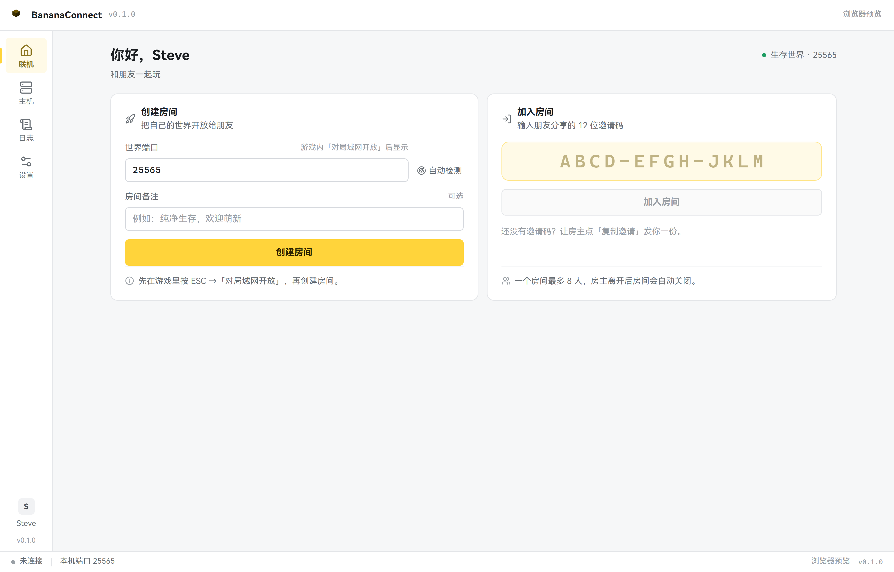

把局域网世界
开出去。
房主在游戏里点「对局域网开放」，这里生成一个 12 位邀请码。朋友输入同一串码， 「多人游戏」列表里就会出现你的世界，点进去就能玩。传输走 P2P 直连，打不通时自动落到公益节点中转。

运行起来
5 秒 · 实际操作
房间面板、主机状态、日志、设置：全部是客户端里的真实界面，不是效果图。
能干什么
THREE THINGS12 位邀请码
网络名、密钥、虚拟网段都由这串码派生，不依赖账号系统。码长 12 位、32 字母表，约 2⁶⁰ 种组合。
直连优先，失败中转
基于 EasyTier 打洞，先尝试两端直连；NAT 打不通时，自动落到公益共享节点中转，不会卡在“连接中”。
列表里直接出现
开启 UDP 广播中继，客户端收到改写端口后的 4445 广播，世界直接出现在「多人游戏」，不用手填虚拟 IP。
为什么这么做
TRADE-OFFS| 方案 | 传输 | 列表出现 | 打洞失败 |
|---|---|---|---|
| PCL CE / MCTier 系 | EasyTier 虚拟局域网 | 多数要手填虚拟 IP | 公共节点中转 |
| XMCL 系 | WebRTC 打洞 | 本地代理 + 广播注入 | 需要自建 TURN |
| BananaConnect | EasyTier + 自建代理 | 广播中继，列表直出 | 自动走公益节点 |
传输层不重造轮子：EasyTier 已在 PCL CE、HMCL、MCTier 里跑了很久。我们把力气花在客户端体验上——世界要自己出现在列表里，而不是让玩家记住一串虚拟 IP。
先说清楚限制
HONEST NOTES首次启动需要管理员权限，用来安装虚拟网卡（WinTun）。
公益节点由社区提供，可能限速、排队或临时不可用。
朋友也要安装同一个客户端，双方都跑 EasyTier 才能互通。
离线联机需要房主侧关闭正版验证（例如 mcwifipnp），这不是本工具能改的。
当前是预览版：房间创建与进程管理已接入 EasyTier，玩家列表与流量指标仍在接入。
传输层使用 EasyTier（Apache-2.0），我们不打包任何 Minecraft 官方素材。
三步
QUICK START-
装好，允许网络组件
解压即用；第一次创建房间时会请求一次管理员权限。
-
游戏里开放局域网
ESC →「对局域网开放」，回到客户端点创建房间。
-
把 12 位码发出去
朋友输入邀请码，等两三秒，进「多人游戏」就能看到世界。
下载
Windows 10 / 11 · 便携版，解压后右键以管理员身份运行。
BananaConnect-0.1.0-win-x64.zip